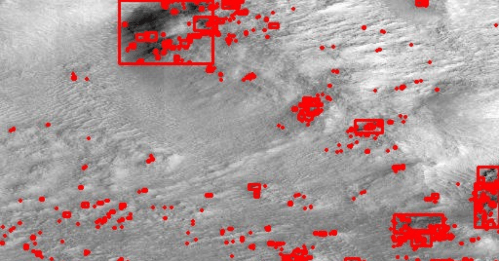
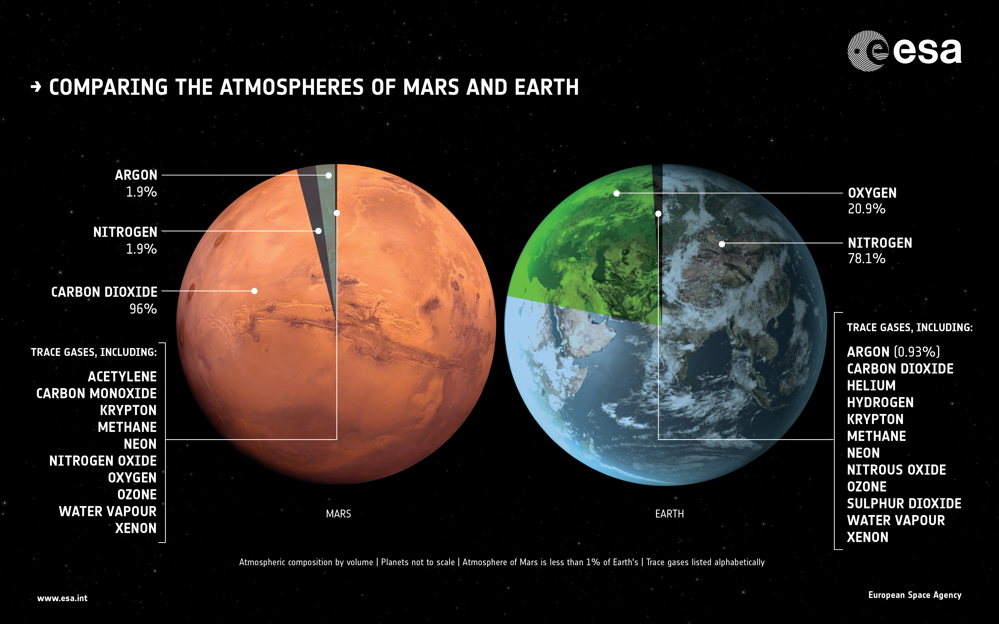
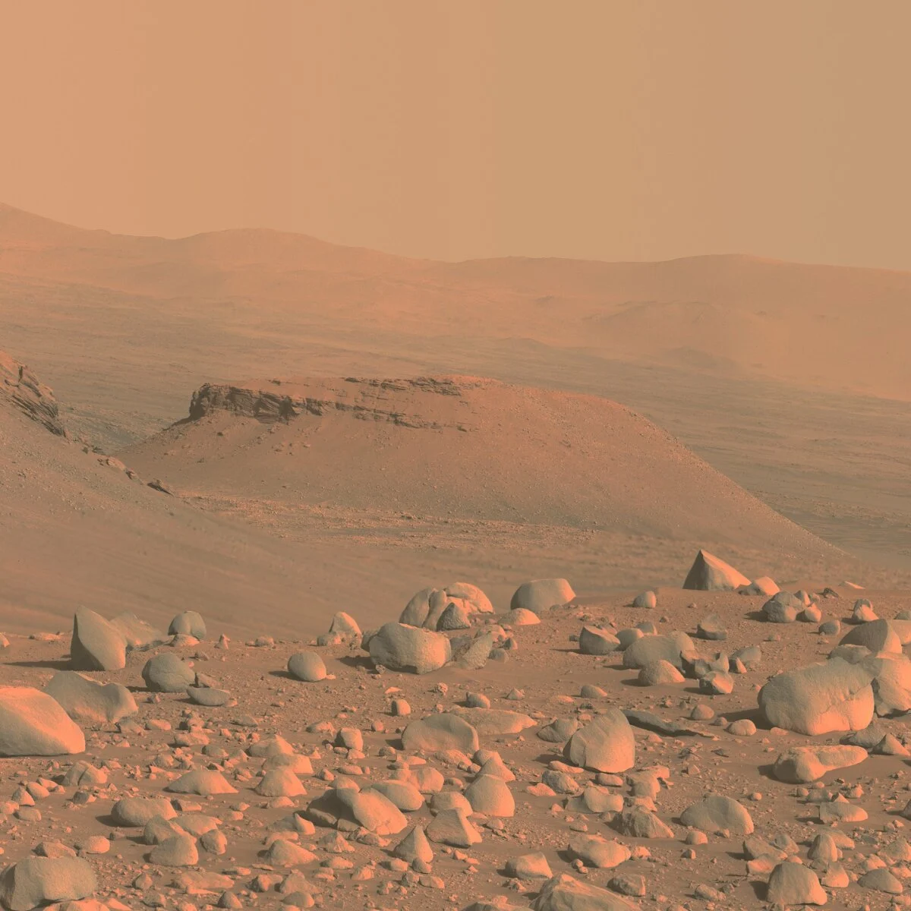

Introduction
Mars, also known as the "Red Planet," is the fourth planet from the Sun in our solar system. It has been a subject of fascination for scientists, astronomers, and science fiction enthusiasts for centuries due to its unique characteristics and potential for past or present life. Here's a comprehensive overview of Mars:
1. Physical Characteristics:
Size and Position: Mars is smaller than Earth, with a diameter of about 6,779 kilometers (4,212 miles). It is the second smallest planet in our solar system, after Mercury. It is situated between Earth and Jupiter in its orbit around the Sun. Color: Mars gets its distinctive reddish appearance from iron oxide (rust) on its surface, which gives the planet its nickname, the "Red Planet." Atmosphere: Mars has a thin atmosphere primarily composed of carbon dioxide (about 95.3%), with traces of nitrogen and argon. It lacks a significant amount of oxygen, making it inhospitable for humans.2. Geology and Surface Features:
Volcanoes: Mars boasts the largest volcano in the solar system, Olympus Mons, which stands about 13.6 miles (22 kilometers) high. Mars also has other prominent volcanoes, including Tharsis Tholus and Arsia Mons. Canyons: Valles Marineris, also known as the Mariner Valley, is a vast system of canyons on Mars, stretching over 4,000 kilometers (2,500 miles) in length and up to 7 kilometers (23,000 feet) deep. Polar Ice Caps: Mars has polar ice caps made of water and dry ice (frozen carbon dioxide). These caps grow and recede with the changing seasons on the planet. Surface Features: The Martian surface is marked by a variety of features, including impact craters, ancient river valleys, and vast deserts.3. Moons:
Mars has two small moons, Phobos and Deimos, which are irregularly shaped and relatively small. These moons are believed to be captured asteroids.4. Exploration:
Mars has been a target for exploration for decades. Numerous spacecraft, orbiters, landers, and rovers have been sent to Mars to study its geology, climate, and potential for past or present life. Notable missions include the Mars rovers (e.g., Sojourner, Spirit, Opportunity, Curiosity, and Perseverance) and the Mars Reconnaissance Orbiter.5. Potential for Life:
Mars is one of the main targets in the search for extraterrestrial life. While the surface conditions are harsh, with low temperatures and high levels of radiation, some scientists believe that life might exist below the surface, where there could be liquid water and more favorable conditions.Why Mars Rover
Mars rovers play a pivotal role in our exploration of the Red Planet, providing a scientific presence on another world. These robotic explorers are equipped with an array of scientific instruments that allow them to investigate the Martian environment in remarkable detail.  They serve as our eyes and hands on Mars, enabling us to study its geology, climate, and potential for past or present life. Rovers are versatile, capable of traversing the challenging Martian terrain, and their missions often extend far beyond their planned durations. They are at the forefront of the search for signs of life, conducting experiments and analyzing samples. Moreover, Mars rover missions also contribute to advancements in robotics and autonomous operations, making them relevant beyond space exploration. As precursors to potential human missions, they help us better understand the Martian environment and inspire public interest in planetary science and space exploration. Through their continued efforts, these robotic emissaries are uncovering the secrets of Mars and paving the way for future endeavors on the Red Planet.Mars Rover Research
Research conducted by Mars rovers is of paramount importance for a multitude of compelling reasons. First and foremost, these rovers delve into the very heart of Mars' geological history, meticulously scrutinizing its surface, rocks, and minerals. This enables us to unravel the planet's enigmatic past, offering invaluable insights into its evolution through the aeons. Furthermore, Mars rovers are on an unyielding quest to search for signs of life, either past or present. They meticulously analyze rock and soil samples in pursuit of organic compounds and other potential biosignatures, driving the ongoing investigation into the possibility of life on the Red Planet. In this quest, they play a pivotal role in expanding our understanding of the potential habitability of Mars. Mars rovers, with their unwavering dedication, are the tireless meteorologists of the Martian realm. They meticulously record climate data, dissect weather patterns, and monitor the atmosphere, offering vital information on temperature variations and meteorological nuances. This meteorological mastery is indispensable for shaping the blueprints of future human exploration missions to Mars. Water, the elixir of life, holds the key to any potential human colonization of Mars. Rovers have unveiled compelling evidence of ancient water flows and frigid polar ice caps, serving as critical resources for future human missions to the planet.  In the realm of planetary protection, Mars rovers stand as guardians of the Martian biosphere. They rigorously ensure that Earthly microorganisms do not inadvertently contaminate the Martian environment. This safeguard preserves the pristine integrity of Mars' potential biosphere and shields against any interference with future scientific investigations. Moreover, the technological innovations developed for Mars rover missions extend far beyond the Red Planet. These technological marvels, encompassing robotics, autonomous systems, and remote communication, find practical applications on Earth, revolutionizing diverse industries, including healthcare, agriculture, and disaster response. Mars rovers, in their tireless pursuit of discovery, do not merely collect data; they capture the human imagination. The images they relay and the mysteries they unveil inspire a global audience, fostering profound interest and support for space exploration and scientific inquiry. As precursors to potential human journeys to Mars, these intrepid rovers embark on vital reconnaissance missions. They scout landing sites, conduct surface condition assessments, and meticulously test various technologies. Their data, lessons learned, and unwavering spirit are instrumental in shaping the blueprint for safe and triumphant human missions to the Red Planet. In conclusion, Mars rovers are indefatigable ambassadors of science and exploration, unveiling the secrets of Mars and forging the path for future human endeavors. Mars rovers, such as Spirit, Opportunity, Curiosity, and Perseverance, have explored and studied the Martian surface extensively, revealing a diverse and intriguing landscape. Here's an overview of some of the key features and characteristics of the Martian surface as investigated by these rovers: Rocky Terrain: Mars is predominantly characterized by rocky, cratered terrain. Rovers have examined a wide variety of rocks and minerals, providing insights into the planet's geological history. Craters: Mars is pockmarked with impact craters of various sizes. These craters offer windows into the planet's past, as they reveal the history of meteorite impacts on Mars.Mountains and Volcanoes: Mars is home to some of the largest volcanoes in the solar system, including Olympus Mons, Tharsis Tholus, and Arsia Mons. These volcanoes are immense and have been a subject of study for rovers. Canyons: Valles Marineris, a system of interconnected canyons, is one of Mars' most prominent features. Rovers have explored parts of this extensive canyon system, providing valuable data about its formation and history. Sedimentary Rock Layers: Some regions on Mars feature layered sedimentary rock formations, suggesting the presence of ancient lakes or rivers. These layers are of particular interest as they may hold clues about the planet's past climate and potential habitability.  Dry Riverbeds and Ancient Lakes: Evidence of ancient riverbeds and lakes has been discovered by rovers, indicating that Mars once had liquid water on its surface. These findings are crucial in the search for past life and understanding the planet's history. Polar Ice Caps: The polar regions of Mars have permanent ice caps composed of water ice and dry ice (frozen carbon dioxide). These ice caps grow and recede with the changing seasons. Dust Storms: Rovers have experienced and documented Martian dust storms, which can sometimes envelop the entire planet. These storms have implications for the planet's climate and atmosphere. Regolith and Soil Analysis: Rovers have collected and analyzed Martian regolith (soil) and rocks. These samples have provided valuable information about the planet's composition and history. Mars' Unique Colors: The reddish appearance of Mars is due to the prevalence of iron oxide (rust) on its surface. Rovers' cameras have captured stunning images showcasing the planet's distinct colors and landscapes.